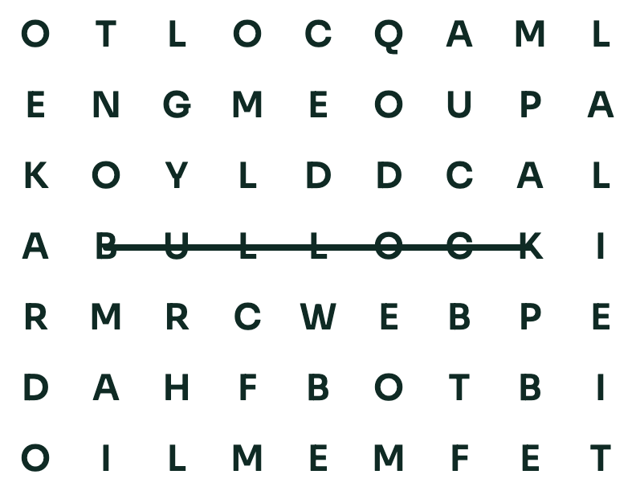
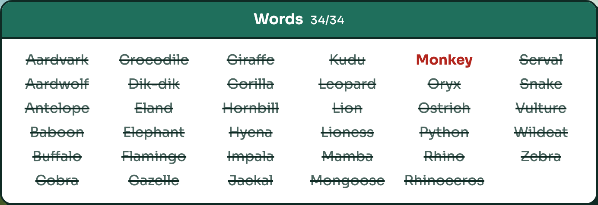
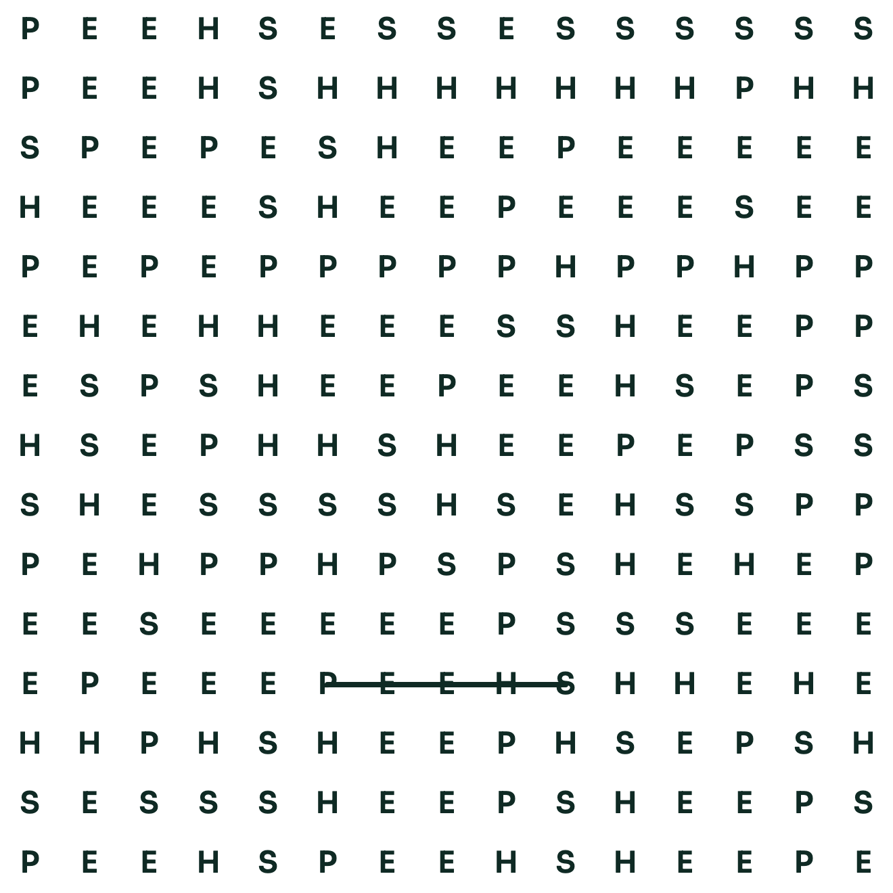
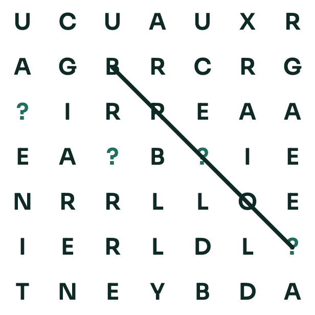
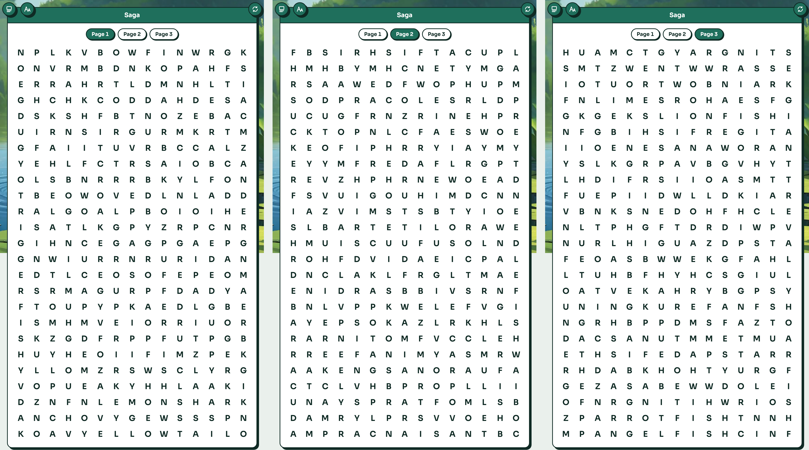
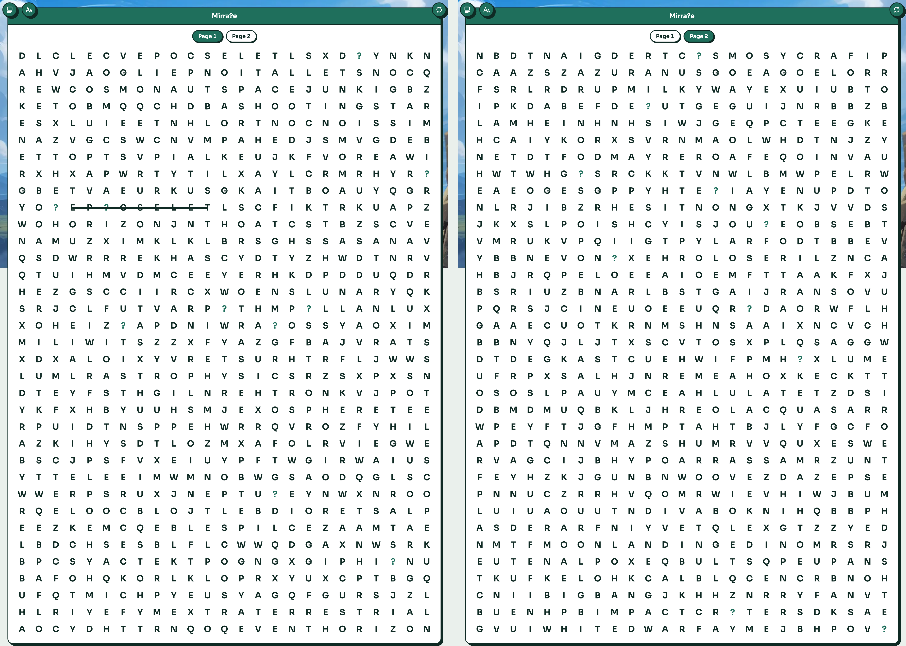

How to play

Vanilla wordsearches
A nice calming wordsearch. No tricks, no challenges; just a normal puzzle: find the words in the list. Words can run in any direction, including diagonally. Of course, they can overlap, but rest assured that words within words (like 'grape' within 'grapefruit') appear as two separate words in the grid.

Missing words wordsearches
This is the first type of challenge! The word list includes one or more words that aren't in the puzzle… You might have been looking so hard for a word that isn't actually in the puzzle! What fun!

Repeating words wordsearches
The next challenge doesn't involve any trickery, but it does test your focus! The puzzle contains only one word… but lots of it. What starts off as a novelty might leave you seeing the word 'sheep' in your sleep!

Wildcard wordsearches
Back to tricky stuff: wildcards are letters in the puzzle hidden behind a '?'. Each one stands for a single letter, which could be any letter, and each wildcard can be a different one. Basically, we've just hidden letters to make it harder for you!

Saga wordsearches
No more rules, just lots of words! These puzzles have a huge list of words split across several grids. And you guessed it, you have no idea which words are in which grid!

Mirra?e wordsearches
The ultimate challenge: every trick at once! Two puzzle grids, a word list with words that aren't really there, '?' wildcards hiding letters, and one word hidden five times across both grids. Like any good mirage, not everything you see is real… Good luck!